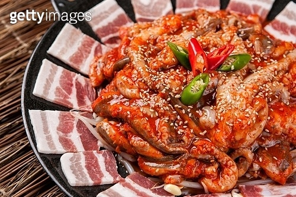
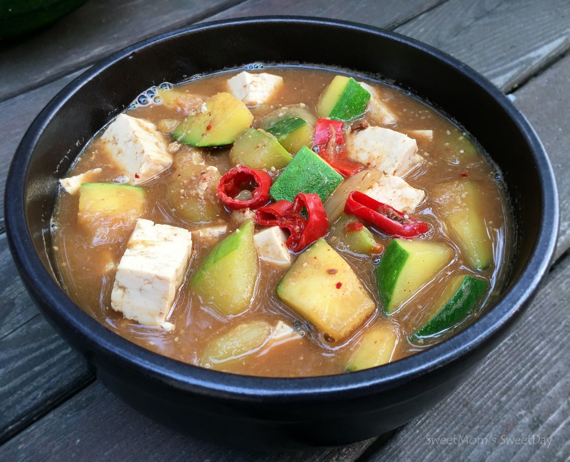
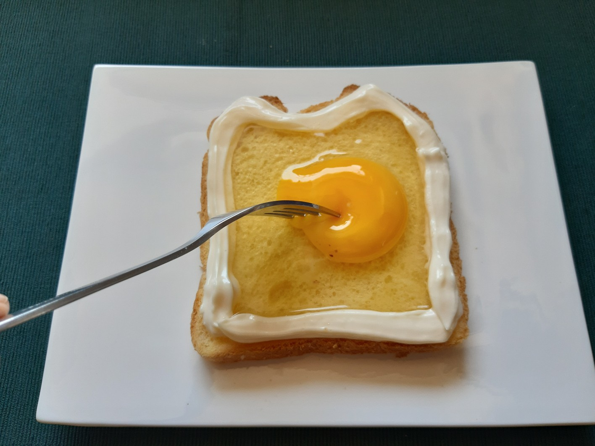

식사용 레시피
간식용 레시피
Woo's Food Truck!
쭈꾸미 삼겹살

재료
쭈꾸미 400g
삼겹살 400g
맛술
간장
다진마늘
물엿
고춧가루
고추장
설탕
굴소스
식용유
양파
대파
참기름
조리순서
볼에 쭈꾸미, 삼겹살, 고춧가루 4 숟가락, 간장 3숟가락, 맛술 2숟가락, 다진 마늘 2숟가락, 물엿 2숟가락 고추장 2숟가락, 설탕 1숟가락, 굴소스 1숟가락을 넣고 잘 버무린다.
식용유를 두른 팬에 양념해둔 쭈꾸미 삼겹살을 넣고 볶는다.
수분끼가 나오면 양배추, 양파, 대파를 기호에 맞게 넣고 같이 볶아준다.
야채들의 숨이 죽으면 참기름을 뿌려 마무리한다.
된장 찌개

재료
된장
쌈장
고추장
애호박
양파
두부
감자
팽이버섯
대파
멸치 다시다
식용유
조리순서
애호박 1/4개를 먹기 좋은 한입 크기로, 양파 1/4개를, 대파 1대를 썰어준다.
냄비에 식용유 한 숟가락과 썰어준 파의 조금을 넣어 예열하여 파기름을 뽑아준다.
된장 3숟가락, 쌈장 2숟가락, 고추장 반숟가락을 넣어 약불에서 볶아준다.
종이컵 2컵정도의 물을 넣어 양념을 풀어주며 끓여준다.
썰어 놓은 재료들과 두부 반모를 넣어준다
취향껏 감자, 팽이버섯 외에도 야채를 넣어준다.
마지막으로 썰어둔 대파 나머지를 넣고 다시다 반숟가락을 넣어준다.
마약 토스트

재료
식빵
마요네즈
설탕
계피
계란
조리순서
식빵 위에 기호대로 마요네즈를 두른다.
설탕을 반 숟가락 정도로 한 바퀴 두른다.
마요네즈로 외곽을 잡아주고 그 안에 계란을 올려준다.
노른자는 터트려주고 전자레인지에 1분 정도 돌린다.
계피 가루를 한 꼬집 정도 뿌려준다.
“Let thy food be thy medicine and medicine be thy food.”